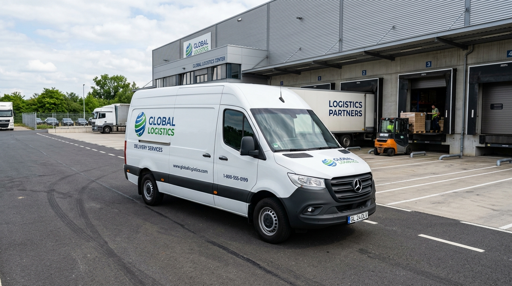

← Retour aux projets
Système de livraisons
Application web de suivi et de gestion des livraisons locales avec traçabilité et affectation des tournées.

À propos du projet
Pilotage de la conception d'un système complet de gestion et de suivi en temps réel des livraisons de colis pour les commerces locaux. La plateforme assure le lien direct entre les expéditeurs, le centre de tri logistique et les livreurs sur le terrain.
L'application a été développée en architecture MVC avec PHP et MySQL, complétée par une interface moderne en JavaScript pour des mises à jour d'état instantanées sans rechargement de page.
Fonctionnalités principales
- Génération automatique de codes de suivi uniques pour chaque colis
- Mise à jour en temps réel des statuts (En préparation, En cours de livraison, Livré)
- Module de répartition des tournées d'expédition pour optimiser les trajets des livreurs
- Espace client avec historique des commandes et accusé de réception électronique